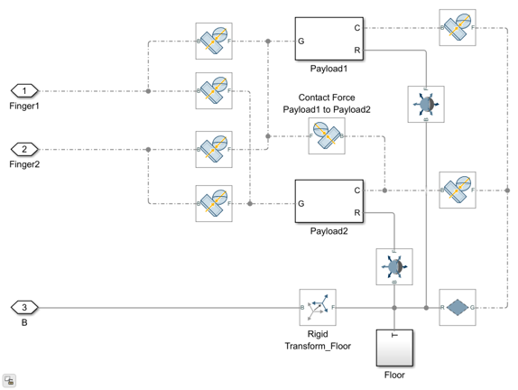

Build Parametric Robot with Gripper Model Using Simscape Multibody
This document shows how to build a parametric model of an articulated robot and gripper with Custom Libraries using Simscape Multibody™. You will learn how to use custom libraries and build a typical articulated robot for pick and place operations in the ParametricRobotWithGripperPayloads SLX file. In this repository, you can find this model in Component > Parametric folder. The design enables an early stage evaluation of a proposed concept and its design iterations. This example uses open-source data for ABB IRB 120 to parameterize the robot.
Contents
Model the Robot
This section shows how to model a parametric articulated robot by using custom library blocks, such as Link, L-Link, Rotating Base With Bracket, and Two Finger Gripper.
Model the Robot Base
- At the MATLAB® command line, enter smnew. The Simscape™ Multibody™ model template with commonly used blocks opens up.
- Delete the Simulink-PS Converter, PS-Simulink Converter, Scope, and Brick Solid blocks. You do not need them in this example.
- Add to the model the Rotating Base with Bracket custom block. In the repository, you can find this block in the Component > Link > LinkLib library.
- Load the geometry and inertia information of the robot base by running the script ParametricRobotWithGripperPayloadsParameters M file.
- To use the single bracket configuration, in the dialog box of the Rotating Base with Bracket block, set Bracket configuration to Single bracket.
- To specify the dimensions of the base, rotor, and the bracket, specify the Fixed base radius and Base total length parameters as shown in the image.
- Set the Inertia type of Fixed Base and Rotor to Custom and specify the values of Mass, Center of mass, Moments of inertia and Products of inertia parameters as shown in the image.
- Add a Revolute Joint block to the model. You can find this block in the Simscape > Multibody > Joints library. This block provides one rotational degree of freedom between the fixed base and the rotor of the Rotating Base with Bracket custom block.
- Specify motion constraints or joint angular position limits of the the Revolute Joint block in Limits > Specify Lower Limit > Bound and Limits > Specify Upper Limit > Bound.
- To enable torque as actuation input, under Z Revolute Primitive (Rz) > Actuation, set Torque to Provided by Input. If you want to enable rotational motion as actuation input , under Z Revolute Primitive (Rz) > Actuation, set Motion to Provided by Input.
- To measure joint rotations, in the Revolute Joint block, under Z Revolute Primitive (Rz) > Sensing, select Position. To measure joint rotational velocity, in the Revolute Joint block, under Z Revolute Primitive (Rz) > Sensing, select Velocity. To measure joint torque, in the Revolute Joint block, under Z Revolute Primitive (Rz) > Sensing, select Actuator Torque. You can add a Mux block to combine the outputs.
- Add PS-Simulink Converter and Mux blocks. Create a subsystem by selecting the Revolute Joint, PS-Simulink and Mux blocks as shown in the image. Name the subsystem as Joint 1.
- Connect the Rotating Base With Bracket custom block with Joint 1 subsystem as shown in the below figure.

Model the Robot Arm
Model the Links
- To model robotic links named Link1, Link3, Link4 and Link5, you can use the custom block Link. Add to the model the Link custom block. In the repository, you can find this block in the Component > Link > LinkLib library.
- Specify the configuration parameters of each link as shown in the table. Select the Left connector configuration and Right connector configuration parameters of a Link from one of the various available options - No connector, Single bracket, Double bracket with pin, Rotating pin and Pin socket. You can connect a Single bracket of one link to a Double bracket with pin of the adjacent link using a Revolute Joint in between and vice versa. You can connect a Rotating pin of a link to a Pin socket of the adjacent link using a Revolute Joint in between and vice versa. You can also select a No connector as one end connector. This configuration of end connector is useful in connecting a link to an end effector or a gripper.
- You can view the parameterization option Left bracket orientation only if you set the Left connector configuration to Single bracket or Double bracket with pin. Same holds true for Right bracket orientation and Right connector configuration. You can set the Left bracket orientation and the Right bracket orientation either to +X or +Z. This example uses open-source data for ABB IRB 120 to parameterize the parametric model. In this repository, you can find the model sm_abbIrb120_1_RawImport SLX file, that uses open-source CAD geometry of ABB IRB 120 robot, in Component > ABBIRB120CAD folder. To match with open-source information of ABB IRB 120 robot, use the following connector configurations and bracket orientations.
- Specify the Link radius and Link length parameters to define solid geometry of an individual link. The image shows the parameter settings of the Link1.
- Set the Inertia type to Custom and specify the values of Mass, Center of mass, Moments of inertia and Products of inertia.
Model the L-Link
- To model robotic link named Link2 you can use the custom block L-Link. The L-Link block models the L-shaped links of a manipulator robot. Member 1 of a L-Link block is a link with No connector as the right connector. Member 2 is a link with No connector as the left connector. Add to the model the L-Link custom block. In the repository, you can find this block in the Component > Link > LinkLib library.
- Select the Left connector configuration parameter as Single bracket. Select the Right connector configuration parameter as Pin socket. The rule of connecting end connectors of adjacent links applies to L-Link as well.
- You can set the Left bracket orientation either to +Z.
- Specify the Link radius, Member1 total length and Member2 total length parameters to define solid geometry of an individual L-Link.
- Set the Inertia type to Custom and specify the values of Mass, Center of mass, Moments of inertia and Products of inertia.
Model the Joint Mechanisms
- To create a joint subsystem Joint 2, add a Revolute Joint block to the model. You can find this block in the Simscape > Multibody > Joints library. This block provides one rotational degree of freedom between the left connector of Link1 and follower (F) frame of Rotating Base with Bracket.
- Specify motion constraints or joint angular position limits of the the Revolute Joint block in Limits > Specify Lower Limit > Bound and Limits > Specify Upper Limit > Bound.
- To enable torque as actuation input, under Z Revolute Primitive (Rz) > Actuation, set Torque to Provided by Input. If you want to enable rotational motion as actuation input , under Z Revolute Primitive (Rz) > Actuation, set Motion to Provided by Input.
- To measure joint rotations, in the Revolute Joint block, under Z Revolute Primitive (Rz) > Sensing, select Position. To measure joint rotational velocity, in the Revolute Joint block, under Z Revolute Primitive (Rz) > Sensing, select Velocity. To measure joint torque, in the Revolute Joint block, under Z Revolute Primitive (Rz) > Sensing, select Actuator Torque. You can add a Mux block to combine the outputs.
- Add to the model two Rigid Transform blocks. You can find this block in the Simscape > Multibody > Frames and Transforms library.
- Add PS-Simulink Converter and Mux blocks. Connect the Rigid Transform, the Revolute Joint, PS-Simulink Converter and Mux blocks as shown in the image.
- To rotate Joint2 axis frames to match with the respective axis frames of ABB IRB 120 robot open-source CAD model, for Joint2 Axis Transform1 and Joint2 Axis Transform2 blocks, under Rotation, set Method to Standard Axis. For Joint2 Axis Transform1, under Rotation, set Axis to +X and for Joint2 Axis Transform2, under Rotation, set Axis to -X. For both blocks, under Rotation, set Angle to 180.
- Create a subsystem by selecting the Revolute Joint, Rigid Tranforms and Mux blocks. Name the subsystem as Joint 2.
- Similarly model the remaining joint subsystems. To match with open-source data of ABB IRB 120 robot, use the joint subsystem parameters in the parametric robot model as shown in the image.
- Connect the Rotating Base with Bracket custom block, Link and L-Link custom blocks and joint subsystems as shown in the image below.
- Create a subsystem by selecting the Rotating Base with Bracket, Link1, Link2, Link3, Link4, Link5 custom blocks and Joint 1, Joint 2, Joint 3, Joint 4 and Joint 5 subsystems. Name the subsystem as ParametricRobotSubsystem.
Model the End Effector
This section shows how to model a parametric end effector by using custom library block Two Finger Gripper.
- Add to the model the Two Finger Gripper custom block. In the repository, you can find this block in the Component > Gripper > GripperLib library.
- Specify the Finger length, Finger width, Finger maximum opening parameters in the Two Finger Gripper block to define solid geometry of the gripper.
- Specify the Gripper density parameter to calculate the inertia.
- Move the slider to set the value of Finger point cloud density parameter to specify a dense or sparse point cloud on the inner gripping surface of each finger.
- Add a Simscape Bus block to the model. You can find this block in Simscape > Utilities library. This block bundles the point cloud geometry information for two fingers.
- Connect the Simscape Bus with the Two Finger Gripper custom block as shown below.
- Create a subsystem by selecting the Two Finger Gripper custom block and Simscape Bus block. Name the subsystem as ParametricTwoFingerGripperSubsystem.
Specify the Payloads and Environment
This section shows how to model the payloads and environment by using Simscape Multibody library blocks like Brick Solid, Point Cloud, Spatial Contact Force, 6-DOF Joint, Infinite Plane and Rigid Transform.
- To model a payload, add a Brick Solid block to the model. You can find this block in the Simscape > Multibody > Body Elements library. Under Geometry, set the value of Dimensions in the block to represent a rectangular parallelopiped payload. Under Inertia, set the value of Density.
- To specify the payload position, add a Rigid Transform block to the model. You can find this block in the Simscape > Multibody > Frames and Transforms library. Under Translation, specify the Method as Cartesian and set the value of Offset to set the position of the payload with respect to the reference frame of the system.
- To model the point cloud geometry of each payload, add a Point Cloud block to the model. You can find this block in the Simscape > Multibody > Curves and Surfaces library. Specify the values of Coordinates Matrix in the Point Cloud block.
- Connect the Brick Solid, Rigid Transform and Point Cloud blocks as shown in the image.
- Create a subsystem by selecting the Brick Solid, Rigid Transform and Point Cloud blocks. Name the subsystem as Payload1.
- Select the subsystem block Payload1, right-click on the subsystem block, click Create Mask. Add Edit parameters Length, Width, Thickness, Density and Position in subsystem mask. Set the values of Length, Width, Thickness, Density and Position in the mask dialog of the payload subsystem.
- Repeat the above steps to create a similar subsystem Payload 2 representing the second payload.
- To model the floor, add a Brick Solid block to the model . Under Geometry, set the value of Dimensions in the block to represent a rectangular parallelopiped floor. Under Inertia, set the value of Density.
- To specify the floor position with respect to the reference frame, add a Rigid Transform block to the model. Under Translation, specify the Method as Cartesian and set the value of Offset to set the position of the floor with respect to the reference frame of the system.
- Create Floor subsystem consisting of the Brick Solid and Rigid Transform blocks.
- Add an Infinite Plane block to the model to represent the surface of the floor on which the payloads rest. You can find this block in the Simscape > Multibody > Curves and Surfaces library.
- Add seven Spatial Contact Force blocks to the model to represent the normal and frictional forces for contact between each payload and each finger gripping surface, between each payload and the floor and between multiple payloads. You can find this block in the Simscape > Multibody > Forces and Torques library. Under Normal Force, select Method as Smooth Spring-Damper and specify values of Stiffness and Damping in each of these blocks. Under Frictional Force, select Method as Smooth Stick-Slip and specify values of Coefficient of Static Friction and Coefficient of Dynamic Friction in each of these blocks. Add two 6-DOF Joint blocks to the model to enable free movement of payloads in all directions.
- Connect the payload subsystems, Floor subsystem, Infinite Plane, Spatial Contact Force, Rigid Transform and 6-DOF Joint blocks as shown.

- Create subsystem PayloadsOnFloorSubsystem by selecting the payload subsystems, Floor subsystem, Infinite Plane, Spatial Contact Force, Rigid Transform and 6-DOF Joint blocks.
Integrate the Systems
- Add a Rigid Transform block to the model. Position it between ParametricRobotSubsystem and ParametricTwoFingerGripperSubsystem to orient the gripper with respect to the robot arm. Under Rotation, set Method to Rotation Sequence, set Rotation About to Base Axes, set Sequence to X-Y-Z and set value of Angles to [0 90 180].
- Connect the subsystems ParametricRobotSubsystem, ParametricTwoFingerGripperSubsystem and PayloadsOnFloorSubsystem to build a parametric robot with gripper and payloads as shown.
See Also
You can also perform a parameter sensitivity analysis to assess the impact of geometric parameters on robot performance like horizontal reach. To know more, see Perform a Parameter Sensitivity Analysis for the Robot Work Envelope
To know more about how to determine the robot work envelope, see Determine the Work Envelope for an Articulated Robot
To know more about how to determine the actuator rating, see Evaluate the Actuator Rating for an Articulated Robot
World Frame — Adds an inertial reference frame to the model.
Mechanism Configuration - Defines the gravitational constant in a model.
Solver Configuration — Sets Simscape local solver options such as types, tolerances, and time steps. This is the only required block in a model.
Revolute Joint - Joint that has one rotational degree of freedom
Rigid Transform - Rotates and translates bodies and other frames relative to each other.